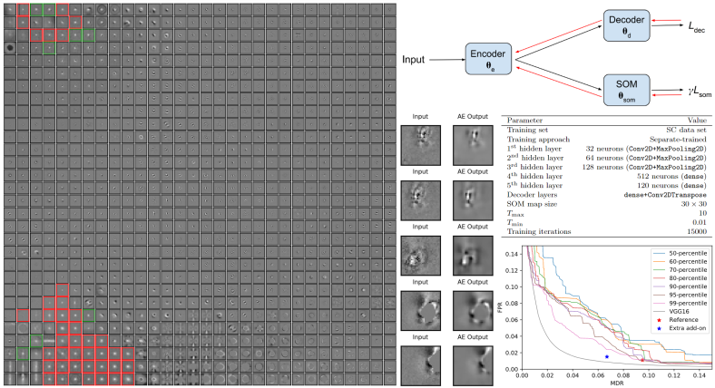

Self-supervised clustering on image-subtracted data
with Deep-Embedded Self-Organizing Map

{kind=link}
Developing an effective automatic classifier to separate genuine sources from artifacts is essential for transient follow-ups in wide-field optical surveys. The identification of transient detections from the subtraction artifacts after the image differencing proccess is a key step in such classifiers, known as real-bogus classification problem. I applied a self-supervised machine learning model, the deep-embedded self-organizing map (DESOM) to this 'real-bogus' classification problem. DESOM combines an autoencoder and a self-organizing map to perform clustering in order to distinguish between real and bogus detections, based on their dimensionality-reduced representations. I used 32x32 normalized detection thumbnails as the input of DESOM. I demonstrated different model training approaches, and find that the best DESOM classifier shows a missed detection rate of 6.6% with a false positive rate of 1.5%. DESOM offers a more nuanced way to fine-tune the decision boundary identifying likely real detections when used in combination with other types of classifiers, for example built on neural networks or decision trees.
{kind=link}